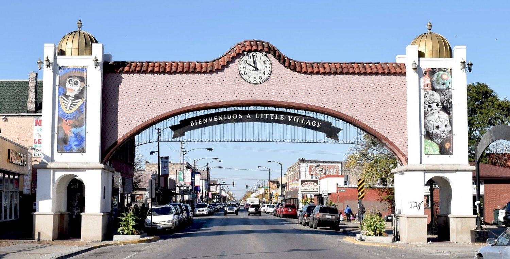

Welcome!

Mural of Womxn in Williamsburg, NYC, NY
I'm a Computer Science major at DePauw University. My passion is split between learning & implementing technology, and diversity & inclusion in STEM. I have a variety of experience that ranges from teaching kids computer science, to interning at a media production company. If you want a more detailed summary of my experience click here!

"Bienvenidos a La Villita", Chicago, IL